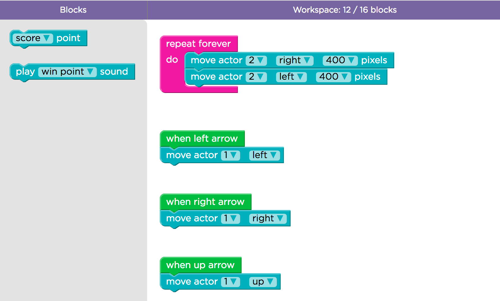

Do It! Code.org: Design a Math Game
 The Challenge
The Challenge
Your challenge is to learn to program using block code, then program a Flappy computer game to help your friends practice their multiplication facts.
Project Steps
-
Tour Play Lab
-
Complete puzzles 1-9
-
Create Your Own Game
-
Create Your Own Math Game
Tour Play Lab
Your screen will be split into three main parts.
On the left is the area where you can see your program run.
In the middle is the gray toolbar where you will find your blocks for programming.
On the right is your workspace. This is where you will move the blocks to build your program.
There is always a video below the program with instructions and hints to help you.

Complete Puzzles 1-9
By completing puzzles 1-9, you will learn how to write computer programs. After you complete each puzzle correctly, you will move on to the next one.
Click here to start your Flappy Bird programming experience.
An instructional video will pop up to get you started.
Create Your Own Game
After you have completed all 9 puzzles, you are ready to create your own Flappy game.
Puzzle 10 challenges you to create your own game. Work with your partner to create a game.
You can change all the visuals and all the rules, even the gravity.
When you are done, click "Finish" to let friends try your game on their phones.
Create Your Own Math Game
After you have made your own game in puzzle 10, it is time to have some fun with math. As a video game programmer, you want to create a game that is both fun and also helps your friends learn. Design a game that scores 7 points each time Flappy passes an obstacle.
- To begin, write down the multiplication facts for the number 7 until you get to the product closest to 100.
- You can either design a new puzzle 10 game or make changes to the game you already created.
- Figure out what blocks you will need in order for players to earn 7 points every time they pass an obstacle.
- When you think that your code is correct, run the program to see if it successfully scores 7 points each time Flappy passes an obstacle.
- If not, continue to adjust your code until your program runs as expected.
- If your game works as expected, make adjustments to the game so that it is fun and helps your friends learn.
- When it is ready, share it with your friends. See who can get the highest score.